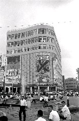

| :::
|
:::
重要個案說明
中影公司接收之日產戲院案(1947)張貼日期：2007/3/8
(一)日據時代新世界大樓 （二）西門町新世界戲院大樓  （三）新世界戲院外觀及新世界戲院開幕 （1967/8/12）
（四）西門町新世界戲院(2007) 1.依監察院調查報告記載，前臺灣省行政長官公署於民國36.1.22核准撥歸國民黨經營之日產戲院，計有大世界戲院等19家。經財政部國有財產局（以下簡稱國產局）查對結果，計有新世界等11家戲院屬日產轉帳登記為中影公司所有。該等戲院大部分已移轉第三人或被徵收，92年間仍登記為中影公司所有者包括原屬國有之台北新世界、嘉義、壽星、光華、新生5家戲院，計土地13筆，面積0.4683公頃，按95年土地公告現值計為9億1,500萬元；及原屬地方政府所有之台中、延平2戲院。 2.民國93年總統大選前，國民黨連前主席對外宣稱要以高道德標準主動歸還實踐大樓及新世界等7家日產戲院房地，經行政院國家資產經營管理委員會黨產處理專案小組分別於93.1.16、93.2.4、93.3.15三度與國民黨協商，確認就92年間仍登記為中影公司所有屬轉帳取得日產之台北市新世界、嘉義市嘉義、高雄市壽星、屏東市光華、羅東鎮新生等5家戲院房地進行處理：至其餘台中市台中、台南市延平2家戲院，因原為台中市、台南市所有，已轉知各該市政府續辦追討事宜。 3.國產局主張上述5家戲院房地，應按原物返還，或按當期土地公告現值加四成之金額返環國庫；惟據國民黨表示，該黨投資之營業機構持有中影公司之股權僅82.24﹪，為維護公司股東權益，無法將該不動產以原物返還，只願意以93年度土地公告現值扣除土地增值稅後，再按華夏公司等持有中影公司之82.24%股份比例計算之金額3億4,491萬9,428元歸還國庫。因該黨對財產之計價基礎未有共識，迄今仍未辦理歸還事宜；甚至不顧協商結果於93.5.24將羅東新生戲院房地出售，且未將處分價款歸還國庫。 4.國產局已在94.8.18國民黨馬英九主席上任後，先後於94.11.22、95.1.9、95.5.3、95.6.12、95.9.13、96.1.30六度函請該黨按當期土地公告現值加四成之金額，並將該黨於協商期間出售新生戲院房地之處分價款，一併歸還國庫。惟該黨仍無具體回應。
撥歸中國國民黨臺灣省黨部經業部分
參考中國現代史史料彙編第四集「光復臺灣之籌劃與受降接收」（中國國民黨中央委員會黨史委員會出版）製表 相關報導 財政部國有財產局再度函請國民黨返還日產戲院房地及新生戲院部分房地之處分價款(2006/6/12) 中影轉帳取得五家戲院協商延期 財部：遺憾(2004/11/08) 國民黨處理黨產新進度 中影五戲院 折現3.4億歸國庫(2004/10/05) 羅東新生戲院 國民黨跳票？ 六月初已出售 黨部回應會以現金折價方式回贈政府(2004/08/24) 宜蘭新生戲院 國民黨偷賣黨產？ 陳金德批選前承諾跳票 張哲琛表示將歸還接收日產部分(2004/06/08) 追討國民黨七戲院，難呀！(2004/1/14) 國民黨：拋棄實踐堂所有權 歸還七家戲院(2003/12/19) 使用 IE 6.0 以上 最佳觀看解析度 1024x768 ． 網站免責條款 國家資產經營管理委員會—黨產處理小組 本網站所載之新聞報導、學者研究等內容，其著作權屬各該著作權人所有，其內容不代表政府立場。其餘資料，依政府資料開放授權條款釋出。本網站原始碼，依MIT授權條款釋出。  歡迎連結 歡迎連結 |